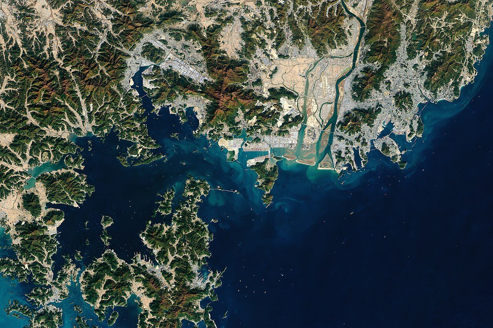
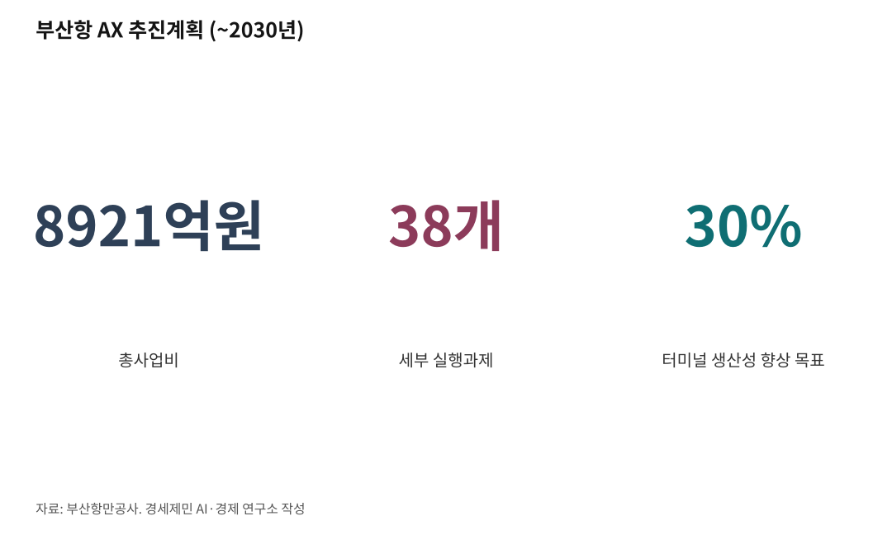

[해양 AI 융복합③] 부산항만공사, 국내 첫 'AI 항만' 전환 계획 내놨다
2030년까지 8921억원 들여 38개 과제, 생산성 30% 향상 목표
컨테이너 나르는 무인장비 기술은 아직 해외에 뒤진다
AI경제저널=김갑봉 기자 | 부산항만공사가 2030년까지 부산항 운영 전반에 인공지능(AI)을 넣는 계획을 내놨다. 8921억원이 들어가고 세부 과제는 38개다. 계획에 무엇이 담겼고 기술은 어디까지 왔는지 2026년 8월까지 확인된 사실로 짚는다.

4대 전략 38개 과제
부산항만공사는 2026년 2월 12일 '부산항 AX(AI 대전환) 추진계획'을 내놨다. AX는 인공지능으로 일하는 방식을 바꾼다는 말이다. 국내 항만 분야 첫 인공지능 로드맵이다.
계획 기간은 2030년까지다. 세부 실행과제가 38개, 총사업비가 8921억원이다. 이 가운데 4351억원을 공사가 낸다.
목표는 둘이다. 컨테이너터미널 생산성을 30% 높이고, 항만에서 사람이 죽거나 다치는 사고를 없앤다.
전략은 넷이다. 한국형 자동화 터미널 완성, 물류통합플랫폼 전환, 위험한 일을 로봇에 넘기는 피지컬 AI, 공공 인공지능 기반시설 확보다.
부산항만공사는 2025년 7월 디지털AI부를 만들고 AI 실무추진단도 꾸렸다. 송상근 사장은 부산항 운영 경험과 AI 기술을 결합해 글로벌 항만 시장 선도자가 되겠다고 말했다.

PLC와 AI는 무엇이 다른가
연정흠 부산항만공사 연구개발부장은 7월 3일 한국해운신문 인터뷰에서 그 차이를 설명했다.
지금 무인 자동화 터미널은 PLC 방식으로 돌아간다. 미리 정해 둔 조건에 맞을 때만 장비가 움직인다. 연 부장은 AI 항만이 이 구조에 인공지능을 더한 방식이라고 밝혔다. 장비가 여러 변수를 스스로 분석하고 학습해 계속 나아진다.
부산항만공사는 부산항에 맞는 기반 모델을 만든다. 배 대는 자리와 쌓는 자리, 냉동 컨테이너 자리, 출입문마다 판단하는 인공지능도 함께 만든다. 장비 제어는 크레인 관리와 배차를 한데 모은 ECS로 묶고 거기에 인공지능을 얹는다.
부산항만공사는 2021년부터 부산신항에 디지털 트윈을 준비해 왔다. 2024년 4월 문을 연 7부두를 그대로 본뜬 가상공간에서 무인 운반차와 크레인이 맞물리는 순서를 학습시킨다.
위험한 일부터 로봇에 넘긴다
피지컬 AI는 위험한 유인 작업을 무인으로 바꾸는 기술이다. 컨테이너를 배에 붙들어 매는 라싱 작업이 첫 대상이다. 추락 위험이 높은 자리다.
연 부장은 로봇이 버클을 채우고 장력을 맞추도록 전용 소켓 개발을 마쳤다고 밝혔다. 시제품 로봇을 만들어 7월 안에 현장에서 실증하겠다고 했다. 계획상 라싱 로봇 개발은 2027~2028년이다.
냉동 컨테이너 장치장도 대상이다. 번호를 확인하고 플러그를 꽂고 온습도를 살피던 일을 벽 타는 로봇이 대신한다.
컨테이너 정렬 상태를 살피는 인공지능은 시험 중이다. 쌓을 때 생긴 오차가 쌓이면 맨 위 컨테이너가 무너질 수 있다. 야드 트랙터 카메라로 잠금 구멍을 훑어 진단한다.
부산항만공사는 7월 30일 HD현대삼호와 협약을 맺었다. 항만장비에 피지컬 AI를 넣고 고장을 미리 잡는 기술을 함께 연구한다.
이송장비 기술은 격차가 크다
연 부장은 국내 자율운송장비 도입 수준과 기술이 낮다고 밝혔다. 항만 장비 자율주행 방식은 둘이다. 신호를 주고받는 장치를 바닥에 깔아 위치를 잡는 방식과 위성항법을 쓰는 방식이다.
연 부장은 중국이 위성항법으로 항만 자율주행을 하는데 우리는 그 단계가 아니라고 말했다.
국책 과제로 자율주행 야드트럭 기술은 개발을 마쳤다. 무인 운반차 국산화는 개발 중이나 연구 성과가 좋지 않고 유럽과 미주, 중국과 격차가 크다고 연 부장은 밝혔다.
그 격차를 메울 사업이 8월에 정해졌다.
부산시는 8월 18일 산업통상부 공모에 '자율주행 기반 스마트항만 모빌리티 플랫폼 기술개발'이 뽑혔다고 밝혔다. 한국자동차연구원과 부산항만공사가 맡는다.
2026년부터 2029년까지 454억6000만원이 들어간다. 실증은 부산항 신항에서 한다. 자동차와 도로에서 검증된 자율주행 기술을 항만에 맞게 고쳐 쓴다. 장비는 국내 기업이 만든 것을 쓴다.
8월 24일에는 2-6단계에 넣을 국산 야드크레인 34기 가운데 첫 두 기가 신항에 닿았다. 2-6단계는 2027년 개장한다.
데이터는 과제로 남는다. 연 부장은 운영사와 선사가 영업 비밀을 이유로 데이터를 잘 내놓지 않는다고 했다.
무인 크레인 40대에 20명
7부두는 컨테이너크레인 9기와 무인 운반차 60대, 자동 야드크레인 46기를 갖추고 있다. 사람이 타고 모는 장비가 없다. 공사는 이 장비를 국산으로 발주해 경제 파급효과 8500억원과 일자리 2400여개를 추산했다.
강석한·남정우·심민섭·김율성 연구진은 2021년 『한국항해항만학회지』에 부산신항 터미널 다섯 곳을 분석한 논문을 실었다. 자료포락분석과 맘퀴스트 지수로 효율성과 생산성 변화를 쟀다.
연구진은 무인 야드크레인 40대가량에 약 20명이 든다고 적었다. 유인 크레인을 쓰는 한 터미널은 최대 144명을 투입했고, 2017년부터 2019년까지 노동생산성이 가장 낮았다. 같은 터미널은 3년 동안 종합 생산성도 2.2% 뒤로 갔다.
연구진은 빅데이터와 인공지능을 다룰 경영자와 실무자를 확보해야 한다고 밝혔다.
고용을 두고 연 부장은 인공지능이 사람을 대체하지 않고 보조한다고 밝혔다. 전체 제어와 관리는 기존 인력이 맡고, 전문교육과정과 교육기관을 지정하겠다고 했다.
연 부장은 계획대로면 2030년에 절반쯤, 2033년에 전환을 마칠 것으로 기대한다고 했다. 라싱 로봇 실증과 이송장비 기술 격차, 운영사 데이터 공유가 그 사이에 놓여 있다.
※ 이 기사는 AI 프로그램 클로드를 활용해 작성했습니다.
참고문헌
가. 연구보고서와 논문
· 강석한·남정우·심민섭·김율성, 「부산신항 컨테이너터미널 효율성 및 생산성 비교 분석」, 『한국항해항만학회지』 제45권 제3호, 한국항해항만학회, 2021.6., 138~147쪽, https://doi.org/10.5394/KINPR.2021.45.3.138
나. 언론 보도
· "부산항만공사 '부산항 AX(AI 대전환) 추진계획' 본격 실행", 국제뉴스 김옥빈, 2026.2.12., https://www.gukjenews.com/news/articleView.html?idxno=3505383
· "'부산항 AX 선도해 세계 속 우뚝 설 것'", 한국해운신문 최홍석, 2026.7.3.(2026.7.7. 수정), http://www.maritimepress.co.kr/news/articleView.html?idxno=332002
· "'접안~이송~적치 100% 자동화' 부산항 신항 7부두 본격 개장", 노컷뉴스 김혜경, 2024.4.5., https://www.nocutnews.co.kr/news/6124677
· "한국형 AI 스마트항만 구축…BPA, HD현대삼호와 협력", 해사신문 부산취재팀, 2026.7.30., http://www.haesanews.com/news/articleView.html?idxno=149815
· "부산항 자동화·무인화 속도···자율주행 플랫폼 기술 개발", 울산매일 김성대, 2026.8.18., https://www.iusm.co.kr/news/articleView.html?idxno=1066783
· "부산항 신항 2-6단계에 국산 자동화 야드크레인 34기 들어온다", 해사신문 부산취재팀, 2026.8.26., http://www.haesanews.com/news/articleView.html?idxno=150476
· "부산항, 자동화 넘어 AI 항만으로", 해양한국 류지훈, 2026.2.20., https://www.monthlymaritimekorea.com/news/articleView.html?idxno=56172
· "현장르포/ 개장 6개월 부산항 신항 서'컨' 부두 2-5단계 모습은?", 해양한국 류지훈, 2024.9.30., https://www.monthlymaritimekorea.com/news/articleView.html?idxno=52318
사진 출처
· [대표사진] NASA Earth Observatory images by Lauren Dauphin, using, "Portbusan satpic 2017320-NASA.jpg", 위키미디어 공용, 퍼블릭 도메인, https://commons.wikimedia.org/wiki/File:Portbusan_satpic_2017320-NASA.jpg
※ 이 기사는 인공지능을 활용해 작성했습니다.
관련기사
- [해양 AI 융복합④] 항만 첫 데이터센터 품는 인천 신항, 착공은 또 2027년 하반기 뒤로
- [해양 AI 융복합⑤] 자율운항선박, 배보다 먼저 온 국제 규범
- [해양 AI 융복합②] 광양항, 정부 '피지컬 AI 항만' 첫 실증 거점 됐다
- [해양 AI 융복합①] 공항 옆 인천항이 200㎞ 밖 군산항보다 늦는 까닭
저작권자 © AI경제저널 무단전재 및 재배포, AI학습 및 활용 금지